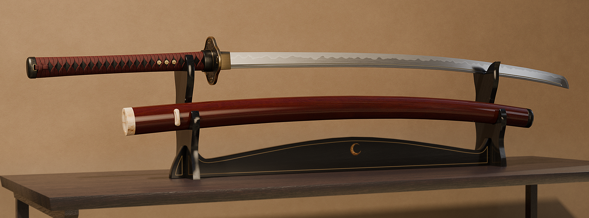
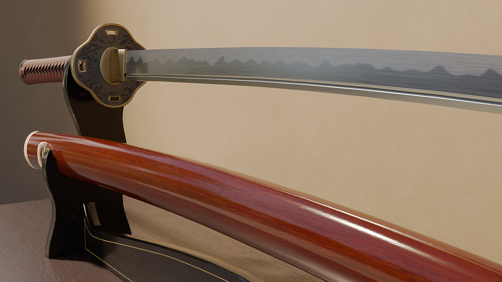
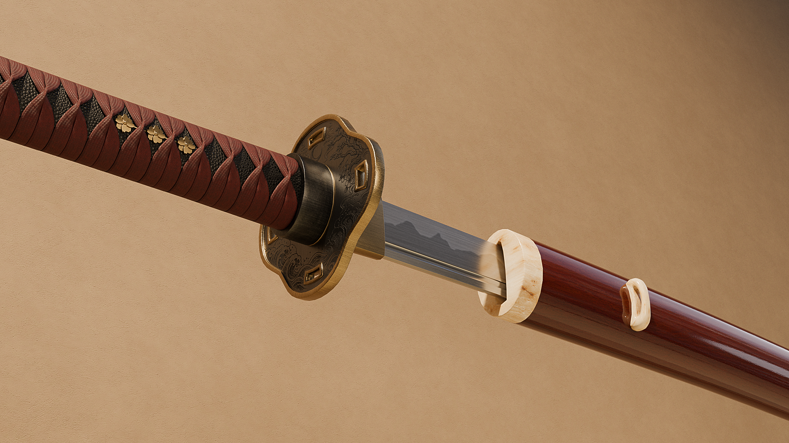
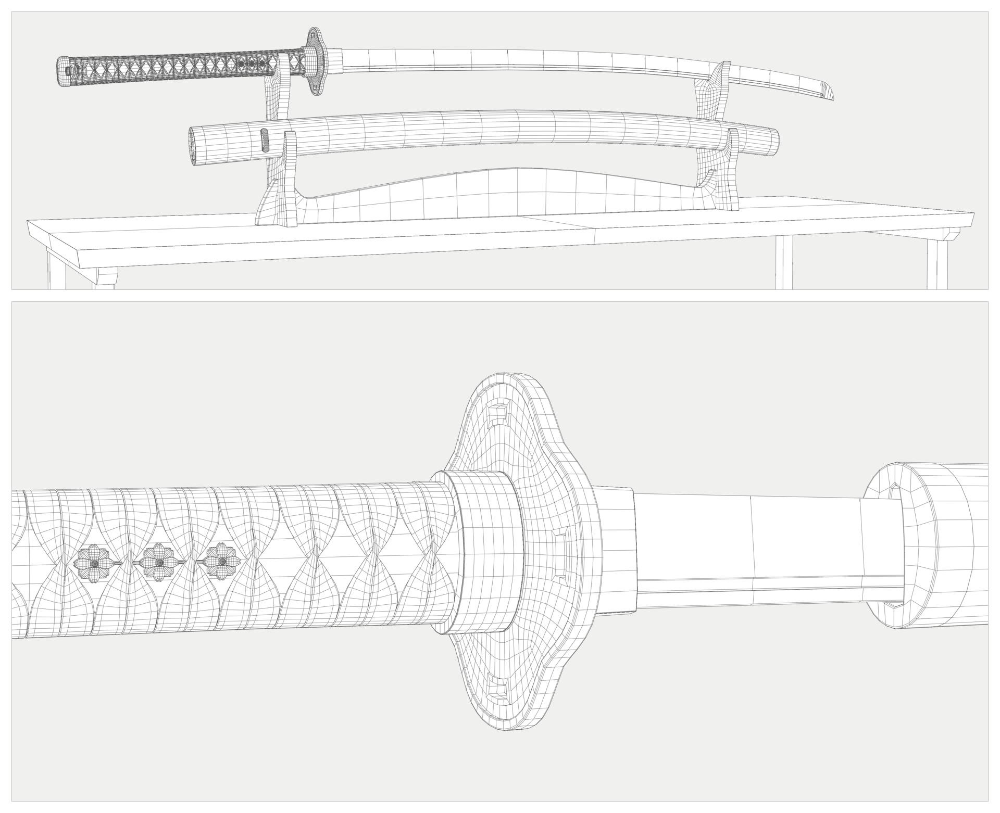
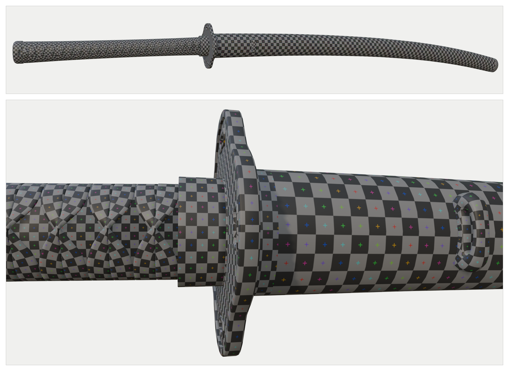
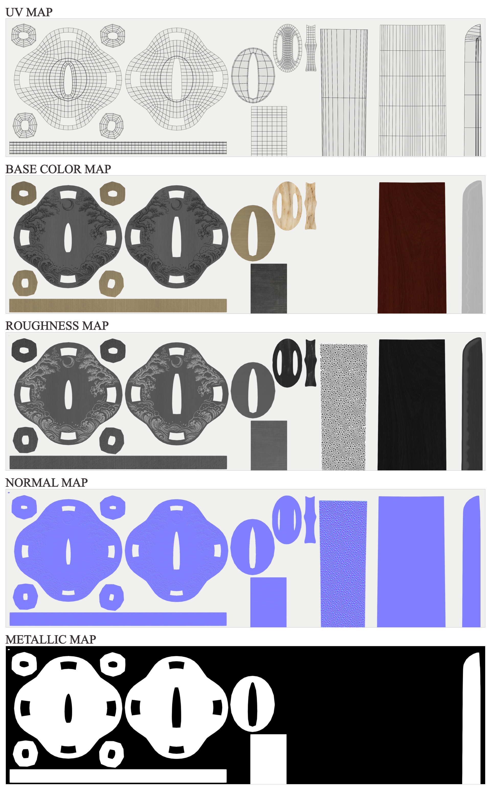

Katana & Saya
3D Prop · Modeling · UV Mapping · PBR Texturing · Lighting

A historically informed reconstruction of a traditional Japanese katana and saya, inspired by the sword-making traditions of feudal Japan. Rather than designing a purely decorative fantasy weapon, I focused on traditional construction principles, carefully considered dimensions and proportions, and the relationship between the blade, handle, fittings and scabbard. The decorative motifs and color palette are my own interpretation rather than a replica of a specific historical sword.
The components were modeled in Blender, including the individually constructed ito wrapping, tsuba, habaki and saya fittings. I created the UV layouts and painted the source textures in Krita, retaining organized, editable master files. The materials combine hand-authored color and surface variation with PBR controls; the blade's subtle hamon is expressed through roughness variation.
Blade & Saya Detail

Handle & Fittings Detail

Geometry & Wireframe

The katana and saya use approximately 47,000 triangles in the base mesh, excluding render-only bevel modifiers. Geometry is concentrated in the individually modeled ito wrapping and detailed fittings; hidden faces in the wrapping were selectively removed to reduce unnecessary geometry.
UV Mapping & Texel Density

A shared 4K UV atlas covers the katana and saya. The layout prioritizes consistent relative texel density, with extra resolution allocated to selected details and room reserved for possible additional components. The checker views illustrate mapping across both the long curved surfaces and the more complex components.
PBR Texture Breakdown

Selected regions of the atlas show how base color, roughness, normal and metallic information contribute to the final materials. Height-based surface detail was also baked to a tangent-space normal map, while the editable source textures remain available for further changes.